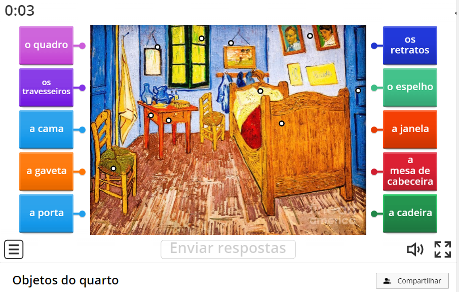

Contact information
Phone: + 55 (71) 982760840
E-mail: romulocraveiro@gmail.com
Main skills
- CLassroom management
- Intercultural approach
- English for Specific Purposes
- Portuguese as an additional language
- Pronunciation training
- Ed Tech
- Learning strategies
- Teaching material creation and adaptation
Languages
- English: advanced
- Italian: intermediate
- Spanish: intermediate
- French: basic
- German: basic
- Russian: beginner
Pedagogical activities
Click on the images to see more:



Wordwall activities

Titles and Certifications
- Master of Letters (UFBA - Universidade Federal da Bahia). Dissertation: Uso de transcri√ß√£o fon√©tica na aprendizagem do portugu√™s brasileiro como l√≠ngua adicional (The use of phonetical transcription in the learning of Brazilian Portuguese as an additional language), March 2009 ‚Äì November 2011. üîó
- Certificate of Specialist in English (UNIFACS ‚Äì Universidade Salvador, Salvador-Bahia, Brazil), April 2008 ‚Äì December 2009. üîó
- Teaching Degree in Portuguese L1 and English L2 (UNIFACS - Universidade Salvador, Salvador-Bahia, Brazil), 2007. üîó
- SIT TESOL Certificate Course ‚Äì World Learning SIT Graduate Institute (Coliga√ß√£o das Entidades de Educa√ß√£o e Cultura Brasil Estados Unidos, Campinas-S√£o Paulo, Brazil), 2012. üîó
- Fullstack Developer - Cubos Academy, Salvador-Ba (November 2021 - June 2022) Link to the end-of-course project "Projeto multidisciplinar de final de curso." It was an opportunity to create a web application from the ground with a team. üîó
- Back-end: programming logic, Node.js e PostgreSQL;
- Front-end: HTML, CSS, JavaScript, React JS;
- Soft skills: time management, negotiation, agile methodologies Trello and Jira Atlassain, non-violent communication;
- Web application development, front end and back end integration, application deployment, code versioning.
- International Cook - Senac-Ba, May - October 2007 (800 hours).
- Menus elaboration and data sheets;
- Hygiene and food safety;
- Cook professional practice in the pedagogical company;
- Cook techniques;
- Introduction to tourism and hospitality
- Workplace safety basics
- Ethics and the environment


Romulo Craveiro
English teacher
Professional Objective
To work with the English language teaching and learning while making the difference in the human development and empowerment of professionals and students alike.
Summary
Teaching for almost 3 decades, I wish to bring to the classroom creativity, a humanized eye, planning, anticipation of problems, and constant reflection on what can be better in my tasks.
Experience
TEACHER OF ENGLISH AND PORTUGUESE AS ADDITIONAL LANGUAGES
ACBEU - Associação Cultural Brasil-Estados Unidos- Coached student teachers (TTC – Teacher Training Course);
- Realizei entrevistas de nivelamento para novos alunos;
- Worked as speaking examiner for MYLE – Michigan Young Learners English Test (Silver and Bronze) in 2016, 2017 and 2018;
- Won a 4-week study grant for the SIT Course (Graduate Institute’s TESOL Certificate Course) - I was one of 6 winners of the schollarship among Binational Centers all over Brazil.
- Presented a workshop on teaching techniques as a result of the 4-week SIT Course in another state;
- Trained peers on the use of technologies for online classes during the pandemic in 2020, helping them with the transition to online classes;
- Taught Portuguese to American students from UCLA and Dartmouth College from 2009 to 2011.
TEACHER OF PORTUGUESE AS AN ADDITIONAL LANGUAGE
Fullbright Group Project Aboroad in Brazil, Salvador, Bahia, July 2019:- Taught Portuguese to professors of Hillsborough Community College and University of South Florida:
- Criei pré-teste e pós-teste no Google Forms para facilitar a avaliação, geração de relatório e feedback aos alunos;
- Gave a local cuisine cooking class as a way to immerse in the culture while students practiced their Portuguese;
- Provided students with an online communication environment (Google Classroom) to facilitate interaction and the sharing of learning documents and tools.
TEACHER OF PORTUGUESE AS AN ADDITIONAL LANGUAGE AND BRAZILIAN CULTURE
Diálogo Language School (December 2000 to March 2009):- Developed teaching material;
- Taught Portuguese to speakers of other languages;
- Interpreted for professors at the school's conferences
PROFESSOR DE LÍNGUA INGLESA E TUTOR DE CULTURA BRASILEIRA
Online Letters Teaching Degree at NUPPEAD – Universidade Salvador –UNIFACS, August 2007 to August 2009:- Developed teaching and learning material for the distance learning course to be applied by tutors during face-to-face classes;
- Recorded video classes;
- Tutored students of the subject Brazilian Culture online
Other professional experiences
TRANSLATOR
ASTRO.COM | SINCE APRIL 2009 | SALVADOR-BA- Translation of Dana Gehardt's articles
ASTROLOGER
SELF-EMPLOYED | SINCE 2017 | SALVADOR-BA- Self-knowledge
- Forecasting
PERCUSSIONIST
MARACATU SANTO ANTÔNIO | FEBRUARY 2014 - NOVEMBER 2017 | SALVADOR-BA- Instruments: alfaia, gonguê, snare
- Performances in fairs and Carnaval
BILINGUAL RECEPTIONIST AND RESERVATIONS AGENT
Hotel Transamérica Salvador (1995 TO 2000):- Performed night audit;
- Attended to guests and clients of the booking department in Italian, English and Spanish;